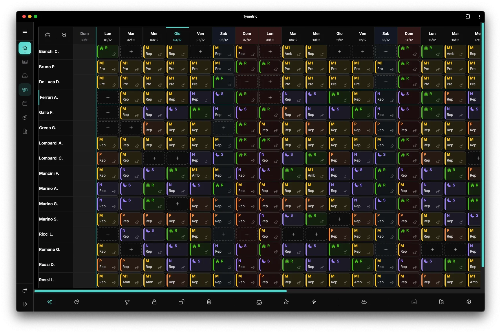

Piattaforma per la gestione dei turni del personale sanitario
Tutto il reparto, in un posto solo.
Griglia dei turni, richieste del personale, approvazioni, competenze, statistiche e app: nella piattaforma di Tymetric il coordinatore costruisce, rifinisce e pubblica il piano senza passare da un foglio all'altro.
Dalla regola alla pubblicazione, nello stesso posto
Configurazione, richieste, pianificazione, pubblicazione e cambi lavorano sugli stessi dati: quello che succede in un punto lo vedi subito anche negli altri.
- 1Configuri il repartoOperatori, fasce orarie, attività, competenze, fabbisogno e regole, una volta sola.
- 2Raccogli le richiesteFerie, assenze e desiderata arrivano dall'app; le approvi o le respingi dalla piattaforma.
- 3Generi il pianoSu tutto il periodo o solo su una parte: i turni che hai fissato restano dove sono.
- 4Rifinisci a manoCandidati suggeriti, azioni in blocco e assegnazioni massive, con gli avvisi sotto gli occhi.
- 5PubblichiIl piano va sui telefoni del reparto: ognuno riceve un avviso nell'app e per email.
- 6Gestisci i cambiSessione di modifica, cambi turno, imprevisti e storico di ogni modifica.
Il piano come serve a te, in quel momento
La griglia è il posto di lavoro del coordinatore: mostra il mese intero o il dettaglio di un turno, e porta alle informazioni senza cambiare pagina.
Vedere
- 5 modalità di visualizzazione
- La vista per persona e quella per attività, più tre densità: dalla panoramica del mese al dettaglio di ogni cella.
- Colori e nomi come preferisci
- I colori delle fasce si personalizzano; i nomi si mostrano per cognome, nome, iniziale, matricola o team.
- Le richieste sulla griglia
- Desiderata e assenze approvate compaiono come cornici sulle celle, con lo stato: rispettate o no.
- Il mese prima, accanto
- Accanto al periodo restano visibili gli ultimi giorni del mese precedente: le notti e i riposi che lo attraversano si controllano senza cambiare pagina.
Trovare
- Anteprima al passaggio
- Passando sopra una cella vedi il dettaglio del turno, e con il lucchetto lo fissi senza aprirlo.
- La scheda di ogni persona
- Dal nome si apre la scheda: statistiche, conteggi per fascia e per attività, anomalie, assenze.
- Tema scuro, per pianificare di notte
- Con un clic la piattaforma passa al tema scuro, più riposante quando pianifichi a fine giornata.
- Italiano e inglese, già integrati
- Il supporto multilingua è nativo: ogni utente sceglie la sua lingua, anche nell'app del personale.

Centinaia di turni, pochi clic
Un mese di reparto sono centinaia di turni. Nel pannello operativo li trovi, li blocchi, li assegni e li controlli a gruppi, vedendo sempre quanti ne stai toccando.
Filtri su nove dimensioni
Persona, attività, fascia, tipo di turno, ruolo, team, turni fissati o flessibili, origine (manuale, automatica, da richiesta), giorno della settimana.
Azioni in blocco
Con i filtri e le date isoli i turni che ti interessano e li blocchi, sblocchi o elimini insieme. Prima di confermare vedi quanti turni stai toccando.
Assegnazioni massive
Un congresso di tre giorni per cinque persone, l'ambulatorio del martedì per tre mesi: date, persone e azione, poi un'anteprima che separa i casi compatibili da quelli no.
Prova prima di approvare
Un'assenza in attesa si applica in simulazione per vederne l'effetto sul piano, prima di decidere.
Contatori su misura
Conteggi a scelta, con gli stessi filtri delle regole, confrontati con il periodo precedente.
Export Excel
Per attività o per persona, con la configurazione che si salva per i mesi successivi.
Il candidato giusto, in un clic
Per ogni turno da coprire, Tymetric ti mostra chi può prenderlo, dal più al meno idoneo. Per chi non può, ti dice anche perché: un'assenza, una competenza che manca, il riposo minimo, i giorni consecutivi, l'alternanza dei weekend, una desiderata o una regola del reparto.
- Il perché di ogni riposo. Ogni riposo assegnato dice la sua ragione: una richiesta, il riposo settimanale, una festività, troppi giorni di fila, l'alternanza del weekend o il recupero dopo un festivo.
- Avvisi prima di salvare. Quando modifichi un turno, la piattaforma ti segnala competenze e disponibilità che non tornano.
- Anche dopo la pubblicazione. Quando si apre un buco, Tymetric suggerisce gli scambi e i trasferimenti migliori, dal più adatto in giù.
Decidi sulle ferie con due numeri davanti
Le richieste del personale non aspettano in un cassetto: contano nel piano già mentre sono in attesa, e quando arriva il momento di decidere sai quanto rischi.
- Quanto è sicuro approvarla. Per ogni assenza non tutelata, un indice di confidenza ricavato da molte simulazioni del mese, che tengono conto anche dei legami tra i turni.
- Quanto pesa sulle altre richieste. Vedi in anticipo se dire sì mette in difficoltà chi, tra i colleghi, aspetta ancora una risposta.
- Contano già mentre sono in attesa. Il motore cerca di lasciare liberi i giorni richiesti, così approvare una richiesta non vuol dire rifare il piano.
- Una alla volta o tutte insieme. Le desiderata si approvano singolarmente o in blocco, e la griglia segnala quelle rispettate.
- Niente motivi sanitari. Per un'assenza basta «Non dichiarata»: il motivo non serve al piano e non si registra.
Ognuno dove sa lavorare, con il livello giusto
Le competenze sono parte del piano, non una nota a margine: la piattaforma le registra persona per persona e il motore le rispetta in ogni assegnazione.
- Livello base o senior per ogni competenza di ogni persona, con le eventuali eccezioni personali.
- Requisiti per attività. Per ogni attività scegli se basta il ruolo o servono competenze, e con quale livello minimo.
- Quota di senior nel fabbisogno. Il motore cerca di rispettarla senza mai lasciare scoperto un turno per ottenerla.
- Ruoli e catalogo. Ruoli dalla tassonomia sanitaria di Comparto e Dirigenza, competenze aziendali e competenze specifiche del reparto.
Statistiche, cruscotti e storico
- Statistiche di sessione: copertura, carico di lavoro, indice di carico, riposi e conformità, con il collegamento al turno che genera ogni numero.
- Cruscotti di reparto e di persona: ore, notti, festivi, prefestivi, reperibilità, straordinari e assenze.
- Storico di ogni modifica: chi ha cambiato cosa, e quando.
Domande frequenti
Tymetric ha un tema scuro?
Sì. Si attiva con un clic e vale per tutta la piattaforma: utile quando pianifichi di sera o di notte, senza affaticare la vista.
In che lingue è disponibile la piattaforma?
In italiano e in inglese. Il supporto multilingua è nativo: ogni utente sceglie la propria lingua, e l'app per il personale segue la stessa impostazione.
Posso filtrare la griglia per vedere solo una parte del piano?
Sì. Puoi combinare filtri per persona, team, ruolo, attività, fascia oraria e giorno, oltre che per tipo (turni, riposi o assenze), origine e turni fissati. Gli stessi filtri indicano su quali turni agire in blocco.
Come trovo chi può coprire un turno scoperto?
Con «Suggerisci candidati»: per ogni turno Tymetric elenca chi può coprirlo, dal più al meno idoneo, e per gli altri spiega perché non può.
Le competenze hanno livelli?
Sì, base o senior. Per ogni attività scegli il livello minimo richiesto, e nel fabbisogno indichi quanti senior servono in ogni turno.
Approfondisci
Da 1.190 € l'anno, IVA esclusa, primi 3 mesi in prova senza canone.
Richiedi informazioni
Piattaforma, motore e app da 1.190 € l'anno, IVA esclusa, primi 3 mesi in prova senza canone. Calcola il tuo prezzo
Preferisci la posta? Scrivici a info@tymetric.com